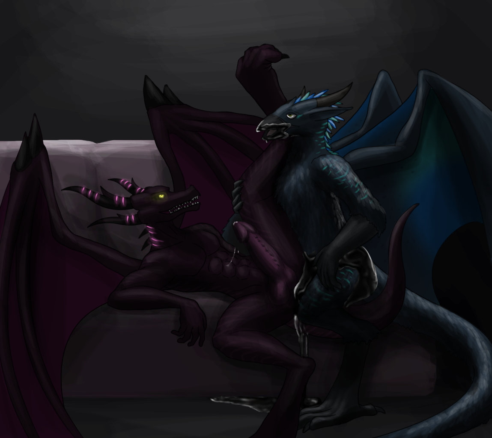

A Deal with the Devil - Part 2 (Digital TF and Brainwash Version)
Written by TwistedSnakes
Commissioned by Wikiwarrior
Illustrated by DragonTears
Wiki walked among the crowds of one of Silver Serpent's many game rooms in his orange form. Sure, his regular form didn't come with the awesome strength that his demonic form provided, but there's just something that people find unapproachable about a well-built demonic dragon walking through the hallways of the Silver Serpent. And if he were to do his job well, he'd need to make use of his draconic charisma.
This, however, didn't mean that he was deprived of his new powers. Instead, he could still use his enhanced senses to assist his search. He could perceive the nature of people's hearts as a faint aura swirling around their bodies, visible if only he looked a little closer.
He had first discovered this power when Decro had transformed him. At first, he thought the Decro's aura was still hanging in the air as the wolf showed him around the Silver Serpent: a bold but dangerous move. Only upon closer inspection, did he realize that the aura was merely in his own perception and not something that was visible in real life.
After that, he started noticing similar auras around the guests and patrons of the casino. Some of them were pale and white. Hues of purity mixed in with light splashes of yellow or blue, depending on how untainted the person was. Most of them, however, had dark vapours creeping in on the edges as the casino's deprave scenes began to sully their purity. Others had darker auras. Purple and black mixed in with hints of red and green. They were not as dark as Decro's aura, but it was a good sign: the corruption was taking hold.
Now, in his orange form, his eyes scanned the grandiose room like a predator looking for his prey. If one didn't know what he was up to, they'd assume he was merely another guest looking for another handsome visitor to ravish that night.
His eyes fell upon a hybrid: a beautiful mix of gryphon and dragon. The grygon had the body of an anthro gryphon, feathers, claws and all, but his head and wings sported sharp, draconic features such as horns and scales. But what piqued Wiki's interest was the deep, dark aura that stood out, even amidst the grygon's dusky blue feathers.
The dragon could feel a sense of anticipation rise within him as his heart began to beat faster and his body began to feel restless. This person was ripe for the picking. And he'd have the pleasure of reaping the poor soul.
He made his way over to the grygon who was sitting at a blackjack table, glancing at his cards: two nines. Eighteen. When it came to the grygon's turn, he was about to stand when Wiki stepped in beside him and said, "Hit."
The dealer turned to Wiki and the grygon as he waited for a response. The hybrid turned to him too and asked, "What's the meaning of this?"
"Trust me," Wiki smirked, "Hit."
"And if I lose?"
"Then I'll pay you twice what you lose here," the dragon slid his Silver Serpent card on the table into the card scanner's range. The dealer nodded in response, entering Wiki's suggestion into the panel in front of him.
The grygon gave him a dirty look before turning back to the table with a huff. "Hit," he said, and the electronic card dealer on the table slid a card towards him. He picked up the card and flipped it over. A three of hearts, coming to a total of twenty-one. Blackjack.
He scoffed incredulously and then turned to the orange dragon as if asking for an explanation.
"The name's Wiki," the dragon grinned, offering his clawed hand for a handshake. The hybrid took it with a firm grip and shook. "Charrtar," he introduced curtly, "So what do you want?"
"You seem interesting," Wiki mused out loud, "And I think I'd like to know you more." He tilted his chin up, pointing upwards as if towards his hotel room in the floors above them.
"Heh," Charrtar sneered, "I'm not a sub, you know. Just because you were lucky with your guesses doesn't mean I'm about to serve your cock. I'm a dom through and through, so you'll be begging for more of my dick by the time I'm done with you."
"Fine with me," the dragon smirked back, "But I'm pretty sure you'll be the one begging for more."
"Not going to happen, kid, but I like your spunk," Charrtar reached for Wiki's crotch and squeezed the bulge that had formed in the dragon's pants, "And we'll do it in the lounge next door."
The couches of the lounge turned out to be surprisingly comfortable for sex as Charrtar joined Wiki on the spacious velvet sofa. The dragon was lying on his back, still wearing his business suit with his hands running over Charrtar's chest. The grygon was nuzzling back, brushing his muzzle against the side of the dragon's neck and eliciting soft moans from him.
Wiki's hands found the hybrid's shirt buttons and he began undoing them, revealing his soft, feathery chest. The grygon did the same, stripping the dragon down as he stroked down Wiki's scaly chest with his tongue. Their shirts came off and were flung onto the floor, giving them full access to each other's upper bodies.
Their bulges rubbed against each other as Charrtar nibbled the edge of Wiki's ear and the dragon squeezed the hybrid's nipples in response. "F-fuck," Wiki gasped as Charrtar explored the erogenous zones of the dragon's auricle with the tip of his tongue. Spasms of arousal shot down his spine, making him squirm beneath the hybrid's body which was pinning him down.
Moving on to Wiki's other ear, the grygon slipped his hand down to the dragon's crotch, cupping his palm and feeling the firm, rounded bulge beneath the cashmere fabric of his pants. He gave the bulge a light squeeze and a small tug, making Wiki moan one more time before he began undoing his belt and pants. Both their pants came off, leaving Wiki and Charrtar in their underwear. The dragon was mesmerized for a second as he stared at the outline of the grygon's sizable member on his underwear.
Not for long, though, as Charrtar resumed grinding his bulge against Wiki's. Their pleasured huffs filled the lounge as Wiki leaked his pre into the cotton fabric. His rump clenched instinctively as if eager for the cock that would soon be entering. He nuzzled back against the side of Charrtar's maw, feeling the soft feathers against his smooth scales.
The firm shaft of the grygon rubbing against his crotch told him what he needed to know about the hybrid's size: it was great and girthy. And Wiki craved that inside of him. His hands glided down the Charrtar's obliques and hips, and he began slowly pulling down the grygon's underwear. The top of the underwear slipped down, revealing the thick base of the grygon's shaft. Then the engorged knot followed, then the shaft. And finally, the glorious, tapered tip of the grygon's cock was showing as the entirety of it stood erect in front of Wiki.
Wiki licked his lips, slipping off his underwear and unveiling his own member to Charrtar. His hands grabbed the armrest that was over his head and he raised his legs, offering his tight pucker to the grygon. "It's time to deliver on your promise," he challenged, "Make me beg."
"Oh, you will," the grygon puffed out his chest and sneered. His hand gripped the head of his dick, milking the liberal amount of pre from his cock and smearing it over his entire length as a natural lubricant.
Taking the residual amount, he stuck his fingers against Wiki's tailhole, gently shoving in to coat the entrance and insides with the slick liquid. With a firm and controlled motion, he began thrusting in and pulling out his fingers, fucking Wiki with his digits. The orange dragon began groaning in pleasure, feeling the grygon's sturdy fingers invading his insides as he tensed his quivering pucker against them. "F-fuck!" he gasped as his erect cock throbbed in a fervent announcement of his hunger for more.
Then the grygon pulled out his fingers, giving them a lick to taste Wiki's ample rear and smell his musk. "Your fuckhole tastes pretty good, boy," Charrtar declared, "Good enough to ravage with my cock."
Wiki's moans were his response, one that the grygon was more than happy to accept. His hefty cock was soon nudged against the dragon's loosened tailhole, letting the orange dragon feel just how big the grygon was.
"Ready for it?" Charrtar challenged, "It's not too late to change your mind."
"Give it to me," Wiki insisted.
"Heh, take a deep breath then," the grygon instructed before plunging his length right into the dragon's tight flesh.
"Son of a bitch!" Wiki yelled as he felt the firm shaft against his inner walls as he clenched back. There was a painful tightness in his rump as the phallus within him filled him up as no cock had ever done before. The grygon remained hilted within the dragon, letting him get used to the size of his member.
After the dragon's breaths had calmed down, Charrtar gently pulled out, giving the dragon a brief moment of relief before he shoved his massive cock back in. Wiki yelped in pain and pleasure as his legs wrapped around the grygon's waist. Charrtar began thrusting in and out of Wiki's tailhole, pounding his firm and supple ass like how a fuck toy is meant to be abused.
The dragon humped back in response, rocking his hips in time with the hybrid's plunges. Their moans were so loud, it was a wonder nobody from outside heard them and came to have a look. Wiki watched the grygon's expression of pleasure: his eyes were closed and his mouth was gaping open with his tongue lolling out.
Wiki could tell that the hybrid was close to climaxing. He would, too, given his arousal, but he had something better in mind. He focused deep inside him as if drawing out his inner power. Sure enough, his muscles began to bulge out as his scales took on a latex sheen. His horns and features sharpened and soon his body was back to its demonic form. The latex from his body began to spread to Charrtar's body, spreading up his cock and to his hips.
"Mfft!" the grygon panted. He had not yet noticed the rubber that was slowly transforming his body as his mind was consumed by the imminent climax. Sure enough, he shot his warm load into Wiki's latex tailhole.
"What the fu—" the grygon opened his eyes and noticed what was going on, but it was too late. The latex had consumed his lower body and wings, and his chest was next. Charrtar backed off in fear but Wiki wasn't about to let him go. He grabbed the back of the grygon's head and pulled him in, forcing him into a kiss. Their lips touched and the dragon kissed hard.

"Mfft!" Charrtar yelped in terror as the latex from the dragon's lips spread to his. It crept up his face, slowly encasing his entire head in rubber. The latex over the grygon's body shifted, slowly warping his form to exhibit sculpted, muscular features. The rubber around his lips turned into the valve of a gas mask, and the rest of his face followed. The squirming grygon's eyes were soon covered by dark, emotionless lenses on his face.
Then a dark vapour began to enter his gas mask: a light sedative mixed with a chemical concoction that would soon brainwash its inhaler. Sure enough, Charrtar's shoulders drooped and his hands fell to his side. A glazed look washed over his eyes as he remained knelt in front of Wiki.
The dragon stroked the back of the grygon's rubber-encased head, caressing the smooth surface. "You look hungry. Hungry for my cock inside your rubber fuckhole." Wiki's cock throbbed in response to his own suggestion. The drone nodded back in a daze. "Then I want you to beg for it." Without hesitation, the drone put its hands together in a begging position, whimpering for the dragon's cock.
Charrtar was no more. In his place was an obedient drone who would listen to Wiki's each and every command.
"Look who's begging for more now?"
It was a pang of hunger. Hunger that started out with a small craving. Hunger that grew each time he devoured another soul. Hunger that had turned into a ravenous appetite within six months since he had received this power.
Wiki had amassed a small army of subservient drones. Drones that would serve him and the Silver Serpent. But each corrupted soul he reaped would only satiate his hunger for a small moment before coming back more tenacious than ever.
That feeling of hunger left him feeling a profound sense of emptiness within his chest. A desolate void that seemed to consume his very soul. And no amount of exquisite food or lavish wine could gratify the acute need.
But he would content himself for now by consuming the souls of the corrupted. He'll clear their minds so that they would be uninhibited to obey his instructions. He'll remove their wills and replace them with his own.
They would serve him with their lives. And he would be their king.
Decro was calmly sitting on a grand throne made out of black marble when the demonic dragon burst into the dimly-lit room. His muscular form had no need for clothes as he made his way between the rows of tall pillars, striding swiftly to the foot of the steps which led up to the raised throne.
"Master!" he called, looking up at the wolf.
"What have you called upon me for?" Decro responded.
"You...you gave me this hunger, didn't you?" Wiki panted heavily, "This craving...for more!"
"I did no such th—"
"Then explain to me, why do I feel this craving? This emptiness inside?" the dragon retorted.
"That's the nature of your mortal form," Decro explained composedly, "Once you get a taste of my power, you unwittingly desire more. You feel starved because of an appetite your earthly body forced upon you."
"Take it! Take it away from me!" Wiki demanded, his voice turning into a vicious growl.
Decro smirked, apparently immensely pleased with himself.
"What," the dragon snapped angrily, "Are you not going to help me? Do you think this is a joke?"
"Oh, on the contrary, servant," the wolf got up from his seat, "All this while, I've known that you'd come to feel this burning urge. I've only been waiting for you to ask."
Decro walked down the steps until he was face to face with the dragon, observing his dark, latex scales and razor-sharp horns. Features that Wiki could have sworn grew sharper and more angular over time. The wolf's clawed hand raised a finger to stroke the underside of the dragon's jaw, sliding down his neck to his jugular notch.
"My faithful servant," the wolf whispered softly, "Today, you shall transcend the limitations of your mortal husk and reach your true potential." A tingle shot down Wiki's spine as he stood still.
"Now, I want you to stand in the middle of the pillars," Decro waved his hand and Wiki turned around to see four pillars rise up from the ground in the middle of the room. The pillars were arranged in a square, each of them made up of glass panels held together by cuboidal metal frames. Wiki could see circuit boards and wires mounted inside of the pillar, surrounded by clear pipes with glowing blue liquids within them that pulsed with energy.
He nodded, making his way towards the centre of the pillar formation. With each step he took, his heart beat faster and faster in anticipation. Perhaps it was the feeling of relief he would finally have after so long. Or perhaps it was the hope of even more power, just like the first time he met Decro. Either way, he soon found himself standing ready in the middle of the square facing the wolf.
With a mechanical whir, steel tentacles made their way out of the pillars, snaking their way towards Wiki. At the ends of the tentacles were menacing metal claws, reaching out for him.
"Keep calm," Decro commanded, and Wiki stood still as the claws grabbed his wrists and ankles, pulling his arms out to the sides and anchoring his feet on the ground. A fifth tentacle, with a curved metal piece lined with spikes, reached out for Wiki from behind.
"Argh!" the dragon let out a deathly scream as the spikes pierced his back, embedding their electrode tips in his spine. Another tentacle with a neural connector plunged its spike into the back of Wiki's head. There was a cool sensation as the needles in his back began pumping an unknown liquid into him.
Wiki tried to calm himself down, quelling the questions that were rising up within him. He closed his eyes and focused on the sensations on his body. He could feel a weighty feeling washing over his body as if it was getting heavier and heavier.
Then imagery began flashing in his head. He could see a multitude of rooms in the Silver Serpent, from the lobbies to the gambling rooms, from the hotel corridors to the staff chambers.
It was as if...
Suddenly, he could see the digital systems of the Silver Serpent. He could see lists of names of the casino members. He could see the casino's outreach campaigns. One of them, in particular, stood out to him: a website advertisement which first introduced him to the Silver Serpent. According to the data that accompanied the advertisement, it contained hypnotic suggestions that would plant thoughts of visiting the casino in its viewer's mind.
Shit.
Had his actions all been the influence of this hypnosis? What was he doing? Why was he here anyway?
Wiki opened his eyes in a panic to see Decro staring back. "You...you brought me here. It's been you all along!" the dragon shouted. He strained his demonic muscles, pulling against the unyielding metal claws that didn't let go.
"Me?" the wolf grinned back incredulously, "That's not true. These thoughts. These desires. These cravings. It's been within you this whole time. All I did was to draw them out. To make you who you were meant to be."
"No!" Wiki denied furiously, gnashing his sharp teeth together as he shook his head.
"It's true. And you know it. You know it deep inside of you."
"You..."
"The aura doesn't lie, Wiki. It's been dark around the edges. You just needed a little push to open up. To let it all in."
"But..."
"It's time to finish what you started."
"Please, no—argh!" Wiki screamed as the foreign liquid in his veins were activated, causing a sear of scorching pain to burn across his entire body. His body was shuddering from the agony, tugging against restraints that would not move.
"S-stop...this..." the dragon panted. It was as if his scales were on fire, blazing across his arms, chest, legs, back, wings, tail, everything. He opened his eyes just to make sure his body was fine, but what he saw gave him a shock.
His scales were turning into a shiny black metal, melting and fusing together into armour plates across his arms and chest. His elbows were turned into mechanical, steel joints, and he could feel that everything else within him was turning into inorganic metal too.
Decro didn't seem as perturbed as Wiki, watching calmly as the demonic dragon before him was being transformed. The metallization spread across the dragon's scaly body, turning more latex scales into metal plates. Sleek pauldrons formed on his shoulders and his abs were reduced to smooth metal. Then his legs and tails were next, turning into robotic limbs.
"Mpfft!" Wiki tried to bear the piercing pain as his wings were converted along with the rest of his body. His wing membranes were replaced with thin, black panels, and the bones were turned into steel rods.
The transformation rose up his neck and Wiki closed his eyes in fear. He could feel the bone in his jaw shift as the chemical compounds in his body reacted with the calcium in his bone, turning it into more smooth, lifeless metal. His scales followed, turning into plates across his face. Wiki could feel the frontal part of his face smooth out as his eyes were covered by a dark, sleek visor. His vision was no longer through organic eyes but optical sensors embedded in his face. Inside his head, his brain was being mechanized. His neurons were replaced with circuit boards, and his mind was turned into a machine.
The conversion was complete. He was now fully bionic.
"Please..." Wiki's now-mechanical voice came out through a voice synthesizer, "Let me go."
But the pillars were not done yet. "Mental corruption detected," a robotic voice in his head announced, "Commencing reprogramming."
"Wait!" the metal dragon begged the wolf for help, "Stop the reprogramming! Stop it, please!" The wolf ignored his pleas.
"10%," the voice announced.
Shit. Shit. Shit.
"30%."
Wiki couldn't quite describe the sensation, but he could feel the edges of his mental psyche being eaten away. His mind, after all, was nothing more than a computer, meant for programming, processing, then erased and rewritten to repeat the cycle anew.
"50%."
Who he was. His identity. His personality. All of them were slipping away. He tried to hold on to them but it was like trying to catch water with a net: futile and in vain. He tugged against the mechanical claws again, but his robotic body was not much stronger compared to his already-enhanced demonic form.
"70%."
"Please, I'm..." he tried to find the words. He was feeling something. An emotion, perhaps. But what were emotions? He couldn't seem to remember.
"90%."
Wiki could no longer fight back. His will had been eroded to the point of nothingness. All he could do was wait.
"100%. Reprogramming completed."
The mechanical claws released the robotic dragon and he stood at attention in front of Decro, ready to serve. The wolf looked the sleek form up and down: unyielding and cold, and most importantly, ready to serve.
The Silver Serpent had claimed yet another soul.
Wiki was no more.
~ End ~